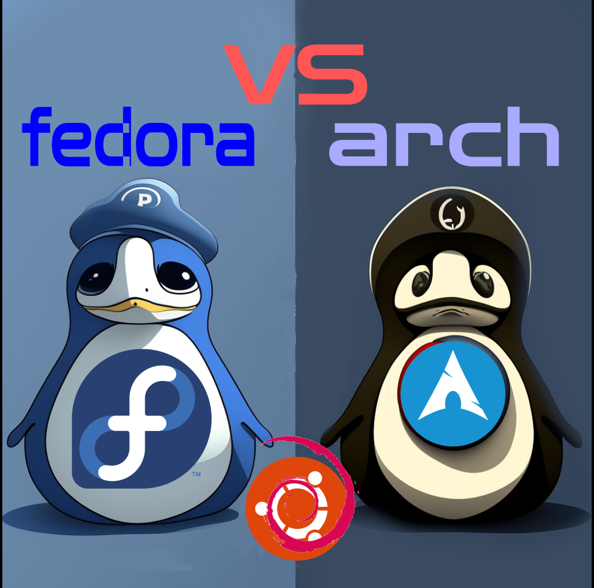

russia cities of russia as foreigner (Onine research) I was collecting data about Russia and Russian cities for the purpose of studying in Russia. Why not
 linux Fedora vs Arch vs Ubuntu Each of the well-known mother Linux distributions, including Fedora, Ubuntu, and Arch, has unique benefits and skills. Below
web My free ghost cms hosting journey. 'm excited to discuss Ghost CMS in this blog article. my free ghost cms hosting journey.A simple